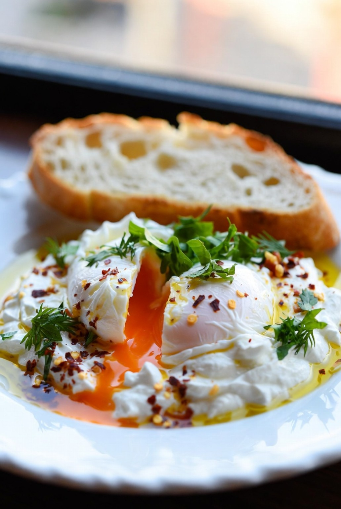

AI PATH · сайт для дела или обучение на своём проекте
Первая рабочая версия твоего проекта.
От идеи — к сайту, которым можно пользоваться. Создай его с наставником или обсуди разработку: начнём с одной задачи посетителя и понятного результата.
Выбери цель, пример и формат. Получишь план для обсуждения; решение о работе примешь после согласования объёма.
Сначала — доказательство действием
Найди сценарий, близкий твоей идее.
Открой пример, выполни задачу и сохрани результат. Затем возьми этот сценарий за основу своего проекта. Весь каталог проектов →
Учебные демопроекты · AI-иллюстрации и работающий код
Учебные демопроекты AI PATH. FLORA, Мори и ДАЛЬ — оригинальные сайты наставника с AI-иллюстрациями и вымышленными брендами. Pocitel — учебный макет по предоставленным материалам меню, без заявления о заказчике или коммерческом запуске. AI Desk — оригинальное учебное 3D-демо наставника на Three.js. На карточках — материалы проектов; интерфейс и действия можно проверить в демо.
Это примеры подхода, а не подтверждение заказов или продаж. В Pocitel заказ не отправляется; маршруты ДАЛЬ вымышлены. AI Desk — визуальный концепт, без инженерной проверки и изготовления мебели.

Материал меню · учебный макет сайта
01 / Учебный лендинг кафе
Pocitel
Меню, в котором можно собрать свой завтрак
Для сайта с ассортиментом: выбрать сочетания, изменить количество и уложиться в бюджет.
На выходе
Список завтрака с порциями, итогом и выгодой — в скачиваемом файле.
Проверь сам
Добавь вторую порцию: сумма и остаток бюджета должны пересчитаться.
Задачу, состав работ, сроки, стоимость и возможные расходы на сервисы согласуем до начала. Продажи и поток заявок не гарантируем: они зависят от предложения, аудитории и трафика.
Твой следующий шаг
Сформулируй проект. Остальное обсудим по плану.
Не нужно заранее знать технологии. Выбери, что хочешь получить, и начни с близкого примера. План поможет предметно обсудить обучение или разработку.
У тебя будет описание задачи, пример и выбранный формат. Его можно использовать для обсуждения. Отправка обращения — отдельное действие; объём, сроки и стоимость согласуем до начала работы.
Можно сделать проект на другую тему?
Да. Примеры показывают сценарии: выбор и расчёт, интерактивную историю, конфигуратор. Твоей темой может быть услуга, хобби, книга или портфолио. Масштаб первой версии определим по задаче.
Нужно ли уметь программировать?
Учебные маршруты доступны с нуля. Для обучения нужен компьютер с современным браузером и время на самостоятельную практику. Программу и возможные расходы на сервисы обсудим заранее.
Что я смогу показать после обучения?
Один собственный учебный сайт с мобильной версией, работающими сценариями, исходниками и ссылкой. Конкретный объём зависит от подготовки и самостоятельной практики; его согласуем до начала.
Это настоящие заказы и 3D-модели?
Это учебные примеры. FLORA, Мори и ДАЛЬ используют AI-иллюстрации и работающий код. Pocitel — макет по предоставленным материалам меню. AI Desk — интерактивная 3D-сцена на Three.js. Коммерческие результаты этих демо не заявляются.